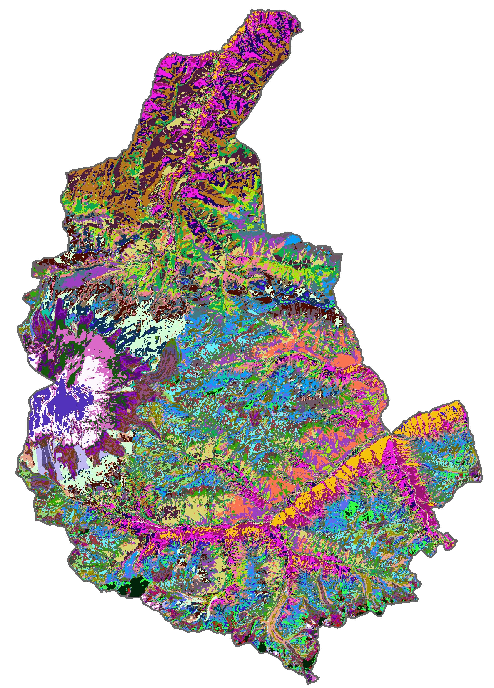
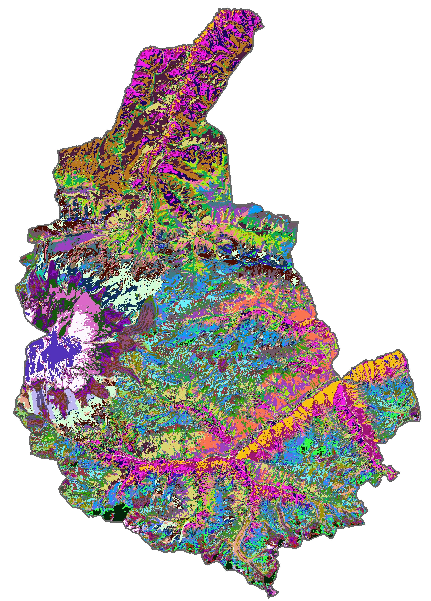

Analysis of national parks landscapes diversity and visibility

The idea belongs to my friend Timofey Moiseev. I performed only geodata processing and its visualization.
We decided to analyse the location of roads and trails in national parks. If there were no trails (at all!), how we could arrange them to cover most interesting parts of parks? Timofey supposed that two key parameters are 1) landscape variability; and 2) landscape visibility.
The first case is important, as if the landscape is same all the time, your trip becomes boring. Much more interesting to walk where, for example, And the second case should be as it is far more pleasant to hike with the view. Observation points often becomes destinations of tourists, so our map must include places from where large territory can be observed.
So the aim was to show an appoach to emphasize the territories most suitable for being visited. We have chosen two national parks in Russia both located in mountain areas, yet different by the views and landscapes. Moreover, I have been to both of them, so I can compare the results to my own impression.
Input data
The first national park is Prielbrusye, located in Great Caucasus Mountains and inclding the highest mount of Europe - Elbrus - of 5642 m. The altitude varies very much here due to high intencity of glacier and volcanic processes. There are several villages and towns within the park, located along the main waterflow - Baksan river (South from Elbrus). Except for Dzhily-Su located on Malka river (North from Elbrus). The southern part of the park is the most civilized and crowded.
Input data for this analysis are global digital elevation model SRTM 1-arc sec (from the left) and
satellite image Landsat 8 shooted in summer 2021 with no clouds (from the right).


The second national park is Zuratkul, located in South Urals among thick forest. Here we can see some nountain ranges prolated along
the axis of the Main Ural Ridge. However, both topography range and altitude here are less than in Prielbrusie, and the area is mostly covered with
forest. There are only one village near the big Lake Zuratkul. A large area of the park is a conservation area.


Processing
First, I show Prielbrusye park example. The variability analysis begins with satellite image classification. I tried three options: 5, 10 and 50 classes, and
the best turned out to be the middle one. 5 classes are too little due to reducing details, and 50 classes are too much as the map becomes diffilcut to analyse. So I chose raster of 10 classes.

 

The next stage was to transform raster to vector polygons and to calculate how many of them intersect with the hexagonal net. I created a net
with hexagons of 500 m width (as it is small enough to keep details essential for trails design, but at the same time large enough to
have each hexagon consisted of at least one class).
So I united polygons of the same class and used spatial join tool.
Now the visibility part. The input raster is a DEM. I created a net of equally-spaced (500 m again) points. For each point the tool calculates how many pixels are visible. I highlighted only most visible areas leaving hillshaded DEM's surface instead of less visible.


Quite expectedly, the southern part of the park is the most diverse in natural landscapes. Great diversity is observed along rivers, it is especially noticeable in the north, where the valley of Malka river (from north to south), as well as Baksan river (from west to east) is readily visible. Local pockets of natural diversity are along the gorges and valleys of mountain rivers. You can also see that near the summit of Elbrus the landscapes are rather monotonous - everything is covered with snow and glaciers.
On the visibility map Elbrus stands out well, which is not surprising, from it you can see almost the entire territory of the park (the exception is the saddle between its two peaks). Also stand out the slopes of high mountains in the south, mostly facing the valley of the river Baksan, as it is quite wide.
Zuratkul park required a little bit of post-classification processing that is noise removal and therefore improving the quality of resulting raster. So I applied (Majority filter) –> (Boundary clean) –> (Region group, set null, nibble) algorithm until I was satisfied with the result.


In the Zyuratkul Park, landscapes are generally quite diverse, mainly in the northwest and south, because there are exposed kurums and rocky ledges of mountains, not only forest. Lake Zyuratkul stands out by its monotony, but its shoreline is one of the brightest places in the whole park. On the visibility map, the mountain ranges stretching from SW to NE are clearly distinguished, especially Zyuratkul in the very north of the park, not far from the lake.
Conclusion
And the final part is the combination of these two maps. Darker colors mark the most attractive sights with variable landscape and large terrirories observed.


In general, Zuratkul landscape diversity does not vary as much as visibility, so the latter influences the final map quite strongly. At the same time, in Prielbrusye Park, both parameters change strongly and differently from each other, so the greatest brightness on the final map received the "average" places and those small areas where high values coincided.
Anyway, this approach may be considered in touristic trails design if most attractive territories should to be highlighted.